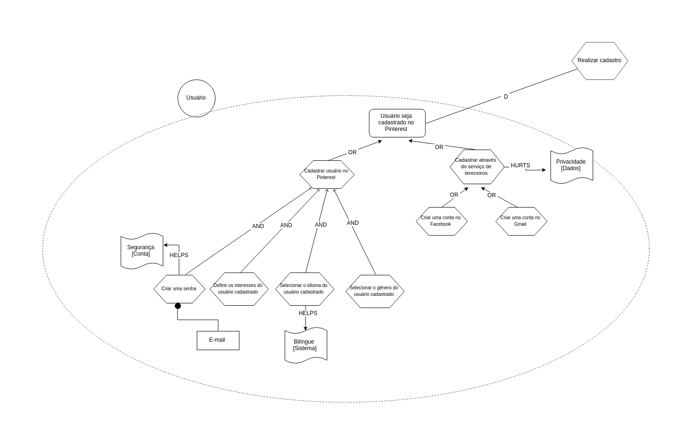

Versionamento
| Versão | Data | Modificação | Autor |
|---|---|---|---|
| 1.0 | 23/10/2018 | Adição da primeira versão do IS1 | Geovana Ramos |
| 1.1 | 23/10/2018 | Adição da primeira versão do diagrama de dependências SD1.1 com foco no pin | Geovana Ramos |
| 1.2 | 24/10/2018 | Adição da primeira versão do diagrama de dependências SD1.2 com foco nas pastas | Gabriela Medeiros |
| 1.3 | 24/10/2018 | Adição da primeira versão do IS2 | Letícia Meneses |
| 1.4 | 24/10/2018 | Adição da primeira versão do IS4 | Guilherme Guy |
| 1.5 | 24/10/2018 | Adição da primeira versão do IS3 | Alexandre Miguel |
| 1.6 | 24/10/2018 | Adição da primeira versão dos IS7 e IS8 mesclados no mesmo diagrama | Daniel Maike |
| 2.0 | 26/10/2018 | Adição da segunda versão do IS4 | Guilherme Guy |
| 2.1 | 27/10/2018 | Adição da primeira versão do diagrama de dependências SD2.1 com foco nas pastas | Gabriela Medeiros |
| 2.2 | 28/10/2018 | Adição da primeira versão do IS5 | Joberth Rogers |
| 3.0 | 29/10/2018 | Adição da terceira versão do IS4 | Guilherme Guy |
| 3.1 | 29/10/2018 | Adição da segunda versão do IS2 | Letícia Meneses |
| 3.2 | 29/10/2018 | Adição da segunda versão dos IS7 e IS8, já separados e com softgoals | Daniel Maike |
| 3.3 | 29/10/2018 | Adição do IS9 tendo o contexto de enviar pin com o pinterest como ator | Daniel Maike |
| 3.4 | 29/10/2018 | Adição da segunda versão do IS3 | Alexandre Miguel |
| 3.5 | 29/10/2018 | Adição da primeira versão do IS6 | Helena Goulart |
| 3.6 | 02/11/2018 | Adição do IS10 tendo uma análise mais ampla do pinterest como ator | Geovana Ramos e Joberth Rogers |
| 3.7 | 15/11/2018 | Adição do IS11 analisando o retorno de pesquisas na aplicação tendo o pinterest como ator | Alexandre Miguel |
| 3.8 | 15/11/2018 | Adição da terceira versão do IS3 | Alexandre Miguel |
| 3.9 | 18/11/2018 | Adição do IS12 | Geovana Ramos |
| 4.0 | 18/11/2018 | Adição das relações de rastrabilidade com outras modelagens | Alexandre Miguel |
| 4.1 | 18/11/2018 | Adição do IS6 | Helena Goulart |
Strategic Dependency Models
Versão 1.0
SD1.1 - Pin

SD1.2 - Pastas

Versão 2.0
SD2.1 - Pastas

Versão 3.0
SD3.0 - Geral

Strategic Rationale Models
IS1 - Definir interesses
Análise: SR1
Modelagens Associadas: NFR1, US13, US36, EP04, ECU4, ECU14, DCU7, C5,
C15, L10, L14
Elicitação Associada: Análise de Discurso
Versão 1.0

Versão 2.0

IS2 - Classificar pastas
Análise: SR2
Modelagens Associadas: NFR3, US25, US26, EP04, EP07, ECU21, DCU21, C10,
C19, L3, L30
Elicitação Associada: Entrevista
Versão 1.0

Versão 2.0

IS3 - Pesquisar Pins
Análise: SR4
Modelagens Associadas: NFR2, US34, US35, EP09, ECU23, ECU24, DCU14, DCU15, C12, L31
Elicitação Associada: Análise de Protocolo 2
Versão 1.0

Versão 2.0

Versão 3.0

IS4 - Seguir usuário
Modelagens Associadas: NFR6, US23, US24, EP05, ECU8, ECU14, DCU10, DCU16, C13,
C19, L8, L14
Elicitação Associada: Introspecção 2
Versão 1.0

Versão 2.0

Versão 3.0

IS5 - Editar configurações de conta
Modelagens Associadas: NFR3, US37, US38, EP02, ECU18, ECU14, DCU26, C24, L14, L17
Elicitação Associada: Análise de Discurso
Versão 1.0

Versão 2.0

IS6 - Cadastro no Pinterest
Modelagens Associadas: NFR2, US10, US11, US12, EP02, ECU1, DCU2, C1, L14, L16, L17
Elicitação Associada: Análise de Discurso
Versão 1.0

Versão 2.0

Enviar Pin
Modelagens Associadas: NFR1, US17, US28, EP03, EP05, ECU10, ECU13, DCU1, DCU9, C7, L1, L14
Elicitação Associada: Introspecção 2
Versão 1.0

Versão 2.0
IS7 - Usuário

IS8 - Outro Usuário

IS9 - Enviar Pin
Modelagens Associadas: NFR1, US17, US28, EP03, EP05, ECU10, ECU13, DCU1, DCU9, C7, L1, L14
Elicitação Associada: Introspecção 2

IS10 - Geral
Modelagens Associadas: NFR4, NFR7 US17, US28, EP03, EP05, ECU10, ECU13, DCU1, DCU9, C1, C7, C10,
C19, L1, L3, L14
Elicitação Associada: Introspecção 2, Questionário, Storytelling

IS11 - Retornar Pins
Modelagens Associadas: NFR2, US34, US35, EP09, ECU23, ECU24, DCU14, DCU15, C12, L31
Elicitação Associada: Análise de Protocolo 2

IS12 - Sugerir Conteúdo
Modelagens Associadas: NFR2, NFR3, US13, US15, US19, EP04, ECU2, ECU19, DCU3, DCU18, C15, L7, L9, L10, L15
Elicitação Associada: Entrevista